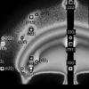
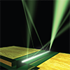
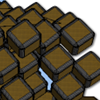
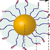
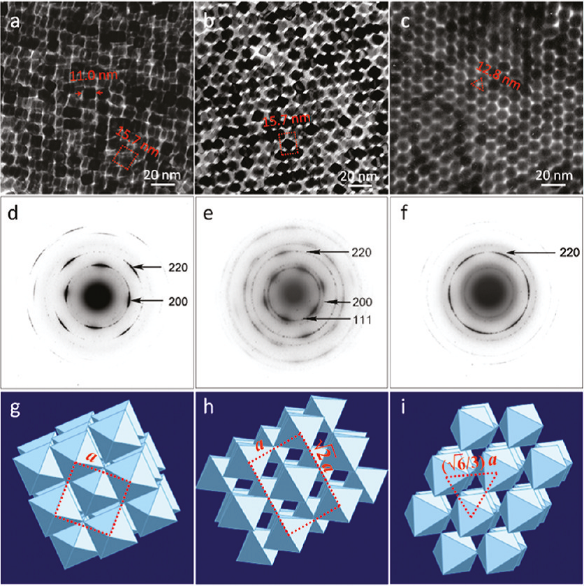
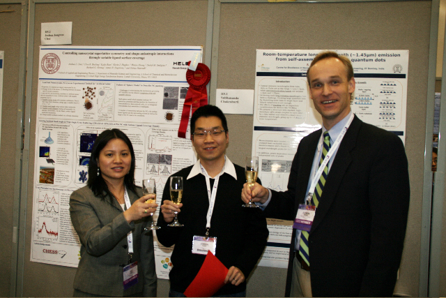
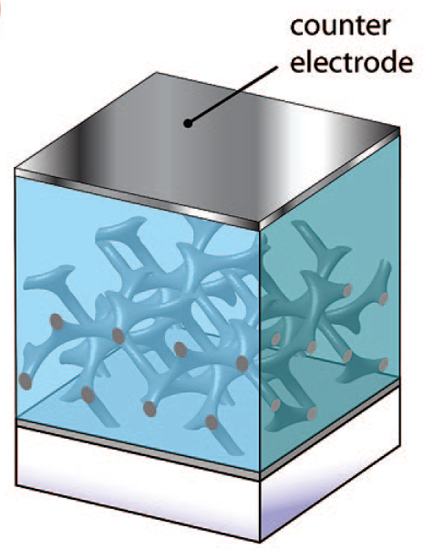
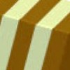
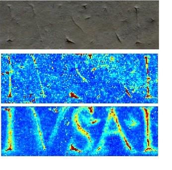

Research Highlights Archive
Detlef-M. Smilgies, CHESS
2012
 Prof.
Brian Korgel (University of Texas at Austin) took diffraction
data at the CHESS D1 station...
 Plastic electronics, in which an organic material replace
silicon, has the promise for more cost- and energy-efficient production
of mass-produced electronics...
 We
all have loved to play with woodblocks...
Assembly
of nanoparticles into ordered superlattices opens up many potential
applications such as sensors, catalysts, and novel optical materials ...
2011
 DNA, the carrier of the genetic information, is a
negatively charged macromolecule. For 2 DNA strands to be able to bind,
positive counterions have to be added to the aqueous medium in form of
salt ...
 Nanoparticles
are nm-sized particles of metals, semiconductors, and insulators
surrounded by a shell of organic molecules bound to the
surface of the inorganic cores ...
There
has been much recent excitement about the use of nanometer-sized
crystals (NC) for a wide variety of applications ranging from
optoelectronics to catalysis to biology and medicine ...
 Crystals
consist of atoms arranged into periodic arrays. There has been much
recent excitement about the use of nanometer-sized crystals (NC) for a
wide variety of applications ranging from optoelectronics to catalysis
...
2010 and before
 Converting light to electrical energy
in solar cells depends sensitively on nanometer-scale structures. This
group reports the first successful solar cell made from an ordered
bicontinuous gyroid semiconducting network ...
 For the May 2007 cover of journal
Macromolecular Rapid Communication ...
“Fuel cells as energy sources” and “organic
light-emitting diodes” are keen interests of one of Cornell’s
newly-minted physical chemists ...
 In an unusual collaboration among
scientists and humanists ...